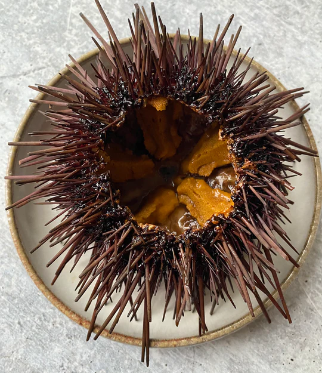

Spinach Wrapped Sea Urchin With Egg Sauce

Ingredients
- 28 large spinach leaves
- sea salt
- 5 and 1/2 ounces (160g) fresh sea urchin roe
- 4 shiitake mushrooms, about 2 inches (5-6 cm) in diameter, stems removed
- Egg Sauce (use 4 egg yolks)
- 4 tablespoons salmon roe
Directions
- Blanch the spinach in a pot of boiling water to which a pinch of sea salt has been added
Plunge the spinach briefly into iced water, remove and pat dry with a paper towel.
- Pile a generous amount of sea urchin roe on top of each upturned shiitake mushroom cap to form a well-rounded mound.
- Arrange 7 spinach leaves with the stalks at the center and the leaves radiating outward.
Place a filled mushroom cap at the center of the leaf pattern and enfold with one spinach leaf at a time.
Repeat with the remaining shiitake and spinach.
- Move the wrapped mushroom to a plate, cover loosely with plastic wrap and microwave for 2 minutes.
- Spread the Egg Sauce on 4 plates and arrange a mushroom on each.
The mushrooms should be cut in half to show the inside.
Spoon the salmon roe in between the halves